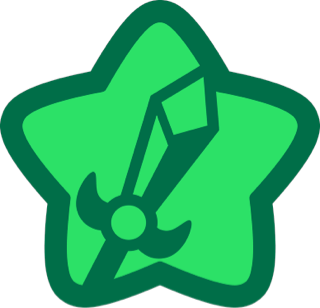
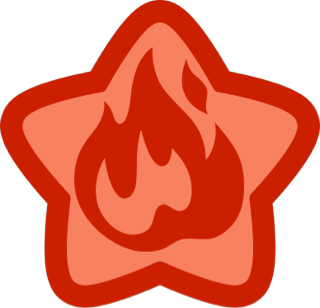

Descubre los poderes que Kirby absorbe de sus enemigos en Dream Land.
Cada habilidad transforma a nuestro héroe rosa en un guerrero único.

Espada (Sword)
Al absorber a Meta Knight o a un espadachín errante, Kirby empuña
una reluciente hoja verde que brilla con la energía de las estrellas
de Dream Land. Con ella puede cortar nubes, partir rocas y desafiar
a los guardias del castillo de Dedede sin pestañear.
Movimientos
-
Tajo Celeste —
Un corte horizontal que lanza una ráfaga de energía estelar hacia el enemigo.
-
Giro de Cometa —
Kirby gira sobre sí mismo con la espada extendida, barriendo todo a su alrededor.
-
Estocada Estelar —
Un empuje rápido hacia adelante que traspasa incluso los escudos más resistentes.
-
Lluvia de Destellos —
Kirby lanza múltiples tajos en diagonal que caen como meteoros desde el cielo.

Fuego (Fire)
Tras inhalar a Hot Head o a cualquier criatura ígnea, Kirby se convierte
en una pequeña bola de lava ambulante. Las llamas que escupe alcanzan
temperaturas capaces de derretir el hielo eterno de las montañas
nevadas y asar las palomitas del rey Dedede en medio segundo.
Movimientos
-
Aliento Volcán —
Kirby exhala una llamarada continua que calcina todo lo que toca.
-
Bola de Magma —
Kirby se transforma en una esfera ardiente y sale disparado en línea recta.
-
Erupción Estelar —
Una explosión de fuego en todas las direcciones que deja el suelo calcinado.
-
Tornado Ígnio —
Kirby gira con llamas, creando un vórtice de fuego que arrastra enemigos.
Hielo (Ice)
Al absorber a Chilly o a un espíritu glacial del Polo Norte de
Dream Land, Kirby adquiere el dominio absoluto del frío eterno.
Su aliento convierte en estatuas de cristal a cualquier enemigo
y puede congelar ríos enteros para cruzarlos de puntillas.
Movimientos
-
Ventisca Ártica —
Kirby sopla un viento helado que congela al instante a todo enemigo en pantalla.
-
Lanza de Escarcha —
Proyectil de hielo afilado que atraviesa múltiples enemigos en línea recta.
-
Avalancha Cristalina —
Kirby convoca una lluvia de bloques de hielo que caen desde el borde superior.
-
Patinaje Polar —
Kirby se desliza sobre una capa de hielo que crea bajo sus pies, arrollando enemigos.
Cocinero (Cook)
Al absorber a Chef Kawasaki o a cualquier chef errante de Dream Land,
Kirby se convierte en el cocinero más temible de toda Popstar. Armado
con una olla gigante y un cucharón de acero estelar, es capaz de
transformar a sus enemigos en suculentos manjares que recuperan su
energía. ¡El rey Dedede lleva años intentando robarle la receta!
Movimientos
-
Gran Cocción —
Kirby despliega su olla mágica y aspira a todos los enemigos cercanos para cocinarlos de un golpe.
-
Cucharazo Estelar —
Un golpe devastador con el cucharón que manda volando al enemigo hacia el horizonte.
-
Salpicadura Hirviente —
Kirby agita la olla lanzando caldo a alta temperatura en todas las direcciones.
-
Festín de Popstar —
El plato cocinado cae al suelo y recupera vida al ser recogido. Cuantos más enemigos, mayor la ración.
Yoyó (Yo-Yo)
Al absorber a un Gim o a cualquier acróbata de Dream Land, Kirby
domina el arte del yoyó con una maestría que desafía la gravedad.
El disco de acero estelar que maneja puede golpear desde ángulos
imposibles, rebotar en las paredes del castillo y volver a su mano
como si tuviese voluntad propia. ¡Una habilidad tan estilosa como letal!
Movimientos
-
Lanzamiento Orbital —
Kirby lanza el yoyó en un arco amplio que golpea tanto al frente como por encima de su cabeza.
-
Barrido Rasante —
El yoyó se desliza por el suelo a alta velocidad, cortando las patas de cualquier enemigo en su camino.
-
Tornado de Hilo —
Kirby hace girar el yoyó frenéticamente alrededor de su cuerpo, creando un escudo de impacto giratorio.
-
Retorno Devastador —
Al recogerse, el yoyó golpea con el doble de fuerza a cualquier enemigo que encuentre en su regreso.